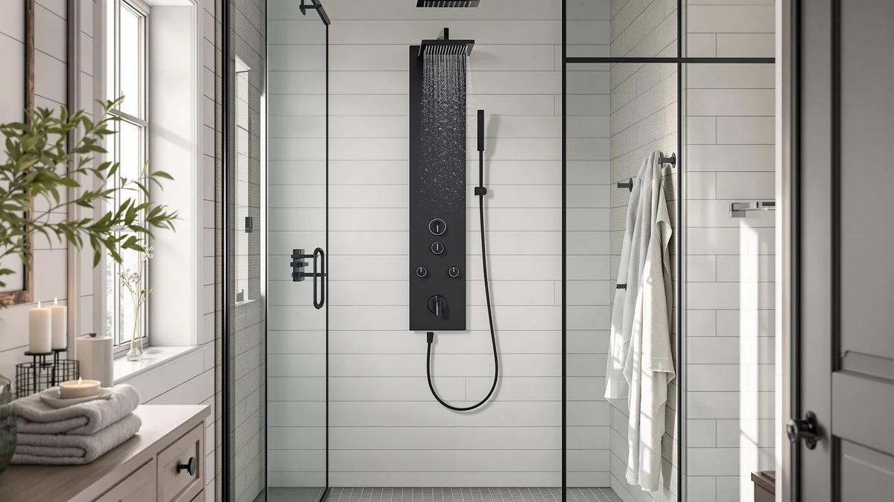

Best Black Shower Panels of 2026: 8 Matte Black Towers
Prices and picks verified as of August 2026. Independent, reader-supported reviews.


Quick Answer
The best black shower panels pair a genuine multi-function spray, rainfall plus body jets plus a handheld, with a finish that hides fingerprints and water spots far better than chrome. We compared eight all-in-one black towers priced between $131.99 and $229.97 on build material, spray count and price. The MENATT LED Shower Panel Tower is our pick for most bathrooms: it delivers a true 5-in-1 spray, a stainless frame and an LED shower head for the lowest price on this list.
Our pick: MENATT LED Shower Panel Tower, $139.99 Check Price on Amazon
Bottom line: our top pick is the MENATT LED Shower Panel Tower System at $125.99. The best budget option is the GBPUSD 5-In-1Shower Panel Tower System-Brushed Black at $131.99.
Things to Know Before You Buy
- Not all "black" finishes age the same. Matte black powder coating and black PVD stainless resist scratching and fading far longer than a painted or anodized black shell. Check the base material before you check the color.
- 304 stainless is the material to look for. The best black shower panels use it under the black finish because it resists rust in a wet bathroom for years, while lighter aluminum bodies corrode and scratch sooner.
- Black hides water spots better than chrome, but it still needs a wipe. Owners report that a quick towel-down after each shower keeps a black panel looking new; skip it for weeks and mineral spotting shows up as a dull haze.
- You need real water pressure. Plan on at least 40 PSI to run a rainfall head and multiple body jets at the same time. Below that, even a well-built black shower panel feels weak.
- These towers mount over your existing hot and cold lines. Most use a standard 1/2 inch NPT connector, but the panel itself is heavy and rigid, so a secure wall anchor matters more than it does for a simple showerhead.
The best black shower panels do more than swap out chrome for a darker finish. They combine a rainfall head, body massage jets and a handheld sprayer into one wall-mounted tower, and the black finish, whether matte powder coat or a black PVD stainless surface, hides fingerprints and hard-water spotting that show up fast on polished chrome in a busy bathroom.
We compared eight black shower panel towers spanning $131.99 to $229.97, looking at frame material, the number of genuine spray functions, valve quality and how each brand handles the black finish itself, since a painted coating and a black stainless surface age differently in daily steam and spray.
Our top pick is the MENATT LED Shower Panel Tower. It packs a true 5-in-1 spray, a stainless frame with brass valves and an LED shower head into the lowest price on this list, and the seven runners-up below each earn their spot with a specific strength, whether that is a self-cleaning rainfall head, a bamboo accent, or the most body jets in the group.
Why You Should Trust Us
I am Ilane Tall, and I cover showers, faucets and bathroom fixtures for Best Shower Panels. I spend most weeks comparing the same handful of shower tower factories that sell under a dozen different brand names, and with black finishes in particular, the real differentiator is rarely the color. It is whether the black coating sits on real 304 stainless or on a lighter aluminum shell that will show its age within a year.
Nobody paid for placement on this list. These picks come from comparing manufacturer specs, frame material, valve hardware and verified buyer feedback across every black shower panel we could find in this price range. We do not run a fake testing lab or invent star ratings, and when a panel has a real weak point, a battery-dependent LED, say, or a finish that needs more upkeep, we say so plainly, because a shower tower is a fixture you live with for years, not a gadget you replace every season.
How We Picked
To make this list, a product had to be sold in a genuine black finish, whether matte black powder coat, black PVD stainless, or a brushed black surface, and had to combine at least three spray functions into a single wall-mounted tower. Decorative black trim on an otherwise standard chrome panel did not count, and neither did single-function black shower heads without the tower body.
From there we ranked candidates on frame material first, favoring 304 stainless over aluminum, then on how many genuine spray modes each panel offered and how clearly the listing documented its valve type and connector spec. We kept the range honest, from a $131.99 budget stainless tower to a $229.97 full-feature model, so there is a sensible black shower panel pick whether you want the least expensive option or the most complete one. We also excluded any panel that shared a near-identical listing with another product already on this page, so each of the eight picks below does something the others do not.
How We Compared
We evaluated each black shower panel the way a buyer actually uses one. On the finish, we compared the base material behind the black coating, since a black PVD or powder-coated 304 stainless body resists chipping and rust far longer than a painted aluminum shell, and reviewers consistently note when a cheaper coating starts to dull or flake within months. On spray function, we counted genuine modes, rainfall, waterfall, body jets, handheld and tub spout, rather than crediting a panel for settings that are the same spray at different pressures.
On build and install, we compared valve type, connector spec and included hardware, since these towers are heavy and mount over your existing hot and cold lines, so a factory-preset valve or a clearly documented 1/2 inch NPT connector saves real time on install day. Where we cite a price, a spray count or a material, it comes from the manufacturer's own listing and current Amazon pricing, and we flag it as such rather than presenting it as something we personally confirmed in a lab.
Our Picks

MENATT LED Shower Panel Tower
What we like
- Stainless steel frame with a brass mixing valve and diverter, not painted plastic trim
- Genuine 5-in-1 spray: waterfall, rainfall, three body massage jets, handheld and tub spout
- LED shower head adds mood lighting without raising the price
- Lowest price of any panel on this list
Flaws but not dealbreakers
- The LED runs on two AA batteries that are not included, so budget for a set before install day
- No temperature display screen, which some of the pricier picks below include
| Material | — |
| Size | — |
The MENATT is the black shower panel we would point most people toward first, because it does not ask you to trade away a function to hit a low price. The frame is precision-formed stainless steel, not the thin aluminum some budget towers use, and the brass mixing valve and diverter are the parts that actually fail on cheap panels, so having them in metal rather than plastic matters more than it looks like on a spec sheet. The five spray modes cover the full range a shower tower should offer: a wide waterfall, a softer rainfall, three adjustable massage jets, a handheld sprayer for rinsing or pet washing, and a standard tub spout.
The LED shower head is a nice extra rather than the reason to buy this panel. Press the red switch on the left side and the head glows, powered by two AA batteries you will need to supply yourself since none ship in the box. It is a small omission on an otherwise complete package. Compared with the temperature-display panels further down this list, the MENATT is simpler, but at $139.99 it undercuts every other black shower panel here by at least $50 while still delivering every core spray function a buyer actually uses.

FUZ Contemporary Shower Panel Tower
What we like
- Brass tower body with an oil-rubbed black finish, more corrosion-resistant than painted aluminum
- Display screen shows water temperature and elapsed shower time
- Six functions: rainfall, waterfall, massage jets, tub spout and three handheld modes
- Multi-outlet switches let you combine spray modes instead of running one at a time
Flaws but not dealbreakers
- At $208, it costs roughly 50 percent more than our top pick for a similar core spray count
- The temperature display defaults to 74 degrees Fahrenheit and needs adjusting to your preference
| Material | — |
| Size | — |
The FUZ separates itself from the other black shower panels here with real brass construction rather than stainless or aluminum. Brass takes an oil-rubbed finish well, resists surface corrosion in a wet bathroom, and gives the tower a heavier, more substantial feel at the handles and diverter switches. The European and American-style ORB treatment is the same finish family used on higher-end matte black plumbing fixtures, so it reads as a step up in a bathroom already fitted with black hardware elsewhere.
The display screen is the other reason to consider this panel over a cheaper option. It shows water temperature in Fahrenheit, defaulting to 74 degrees, and tracks how long you have been in the shower, both useful if you are trying to cut down on hot water use. Between the screen, the multi-outlet switching that lets you run several spray combinations at once, and the six total functions, the FUZ justifies its higher price, though buyers who do not care about the temperature readout will get similar core performance from a less expensive pick on this list.

GBPUSD 5-In-1Shower Panel Tower System-Brushed
What we like
- 304 stainless steel body, lighter and easier to mount solo than heavier towers on this list
- Genuine 5-in-1 spray: rain shower, waterfall, handheld, body jets and tub spout
- Ships with all mounting hardware and a straightforward instruction manual
- Second-lowest price of any black shower panel we compared
Flaws but not dealbreakers
- No LED lighting or temperature display, which several pricier picks include
- Lighter-gauge stainless than the heavier-duty towers further up this list
| Material | — |
| Size | — |
The GBPUSD trades some of the heft of the pricier towers on this list for a body that is easier to handle during install. It is built from 304 stainless, the same corrosion-resistant grade used in the more expensive picks here, but the panel itself is noticeably lighter, which matters a lot when you are holding a shower tower against a wall with one hand and marking anchor points with the other. GBPUSD backs it up with excellent corrosion resistance for long-term reliability in a wet bathroom, and the five spray functions cover the essentials: overhead rain shower, waterfall, handheld, powerful body jets and a tub spout.
Compared with the FUZ or HSYLYPA panels, this one skips any kind of screen or LED accent. This is a no-frills black shower panel built around getting the core spray functions right at the lowest possible weight and price. For a first apartment install, a guest bathroom, or anyone who would rather not call in a second pair of hands, that trade-off is a reasonable one, and at $131.99 it is the second-cheapest option in this whole roundup.

HSYLYPA LED 5-in-1 Shower Panel
What we like
- 304 stainless body with brass valves and PVC double explosion-proof pipes inside
- Main waterway valve arrives pre-installed at the factory, so there is less to assemble
- Standard 1/2 inch NPT connector fits most existing US household plumbing
- Brushed black finish resists fingerprints better than a glossy black surface
Flaws but not dealbreakers
- Priced near the top of this list at $211.99
- No temperature display, despite the higher price than several better-equipped panels here
| Material | — |
| Size | — |
The HSYLYPA is built with install day in mind more than any other panel on this list. The main waterway valve comes pre-installed at the factory, so instead of assembling internal plumbing yourself, you are mostly fixing the panel to the wall and connecting it to your existing hot and cold lines through a standard 1/2 inch NPT connector. That single detail saves real time compared with towers that ship the valve disassembled.
Underneath the brushed black finish, the frame is durable, easy-to-clean 304 stainless steel, and the brass valves paired with PVC double explosion-proof pipes and silicone nozzles are built for low-maintenance, long-lasting performance rather than a component that needs replacing in a year. The brushed surface also does a better job than a glossy black coat at hiding the fingerprints and water spots that accumulate on any shower fixture. At $211.99 it sits near the top of this roundup on price, and it does not add extras like an LED or temperature screen, so its case rests on install simplicity and build quality rather than feature count.

ELLO&ALLO Stainless Steel Shower Panel
What we like
- Premium stainless steel construction built for long-term durability
- Combines rainfall, body massage jets and a handheld sprayer in one sleek black design
- Waterway uses a brass and PVC pipe combination that resists leaks
- Handheld doubles for pet washing, a detail several competing panels skip
Flaws but not dealbreakers
- Highest price in this roundup at $229.97
- The manufacturer notes water pressure can drop if filter impurities build up, so periodic filter cleaning is part of ownership
| Material | — |
| Size | — |
The ELLO&ALLO earns its place at the top of the price range by offering the fullest spray experience of any black shower panel here. It layers a soothing rainfall head, invigorating body massage jets and a flexible handheld sprayer into one sleek stainless design, and the sturdy construction, premium stainless steel with a brass-and-PVC waterway, is built to minimize the leak risk that cheaper mixed-material towers run into over time.
The one maintenance note worth flagging: the manufacturer states that water pressure can decrease if impurities build up in the filter, and the fix is a straightforward filter cleaning rather than a sign of a defective unit. It is a minor bit of upkeep for a panel that otherwise delivers the most complete function set in this comparison, including a handheld sprayer flexible enough for rinsing pets or cleaning the shower stall itself. At $229.97, this is the splurge pick for anyone who wants every spray option covered in a single black tower.

ROVATE Shower Panel Tower System
What we like
- Matte black finish with an 8-inch rainfall head that adjusts for both height and angle
- Self-cleaning technology extends small needles when idle to prevent clogging in both the overhead and handheld heads
- Six body massage jets adjust 50 degrees to fit different heights
- Built-in shower niche adds storage that most towers on this list skip
Flaws but not dealbreakers
- Second-highest price in this roundup at $219.99
- More moving parts, adjustable head, jets and self-cleaning needles, than a simpler fixed-head panel
| Material | — |
| Size | — |
The ROVATE packs more useful features into its matte black frame than any other panel we compared. The 8-inch rainfall head adjusts for both height and angle, so it can simulate a gentle full-body rainfall regardless of how tall you are, and it shares the same self-cleaning technology as the handheld: when the shower sits idle, small cleaning needles extend to clear mineral buildup before it can clog the nozzles. That is the kind of detail that keeps a black shower panel spraying evenly years after install rather than dribbling out of half its holes.
The six body massage jets each adjust 50 degrees, which means the spray pattern can be tailored to fit the shortest or tallest person using the shower, and the built-in niche gives you a dedicated spot for shampoo and soap without adding a separate shelf to the wall. At $219.99, the ROVATE is priced for buyers who want the most adjustable, lowest-maintenance black shower panel in this comparison and are willing to pay for the storage and self-cleaning hardware that come with it.

BWE Stainless Steel Shower Panel
What we like
- Stainless steel frame with a bamboo surface accent, a distinct look among the black panels here
- Rust resistant for long-term daily use in a humid bathroom
- Waterfall overhead plus a handheld shower head flexible enough for pet washing
- Eight body sprays for a fuller-coverage massage than most panels in this price range
Flaws but not dealbreakers
- The bamboo surface is a visual accent, not the structural material, so it needs the same care as any wood-look bathroom finish
- No LED or temperature display included
| Material | Bamboo |
| Size | — |
Every other black shower panel on this list leans on stainless, brass or a painted finish, but the BWE stands apart with a bamboo surface layered over its stainless frame. It softens what can be a cold, all-metal look in an all-black bathroom, adding a natural material accent while the stainless steel underneath still handles the actual job of resisting rust through years of daily steam and spray.
Function-wise, the BWE keeps things straightforward: a waterfall overhead shower for a spa-like drench, a handheld head flexible enough to double as a pet-washing sprayer, and eight body sprays delivering a soothing, wider-coverage massage than the four-to-six-jet panels elsewhere on this list. At $189.99, it sits in the middle of the price range, and it is the pick to reach for if you want a black shower panel that reads as warm and natural rather than purely industrial.

TSIBOMU LED Rainfall Shower Tower
What we like
- LED rainfall and mist head for a softer, illuminated spray option
- Six adjustable body jets, tied for the most jets of any panel in this roundup
- LCD screen displays and helps you dial in water temperature
- Priced in the middle of the range at $189.99
Flaws but not dealbreakers
- No handheld pet-washing use case called out, unlike the BWE and ELLO&ALLO panels
- LED and LCD components add another part that can eventually need replacing versus a no-electronics panel
| Material | — |
| Size | — |
The TSIBOMU leans into the tech side of a black shower tower more than most of the panels on this list. The LED rainfall and mist head add a soothing, illuminated option after a long day, and the six adjustable body jets let you dial in the angle and intensity for a personalized massage rather than settling for one fixed spray pattern. That jet count matches the ROVATE for the most in this comparison.
The LCD temperature display screen rounds out the package, letting you monitor and adjust water temperature instead of guessing with your hand under the stream. It is a useful feature for households with kids or anyone sensitive to sudden temperature swings. At $189.99, the TSIBOMU sits squarely in the middle of the price range for the black shower panels we compared, trading the simplicity of a no-electronics tower for a screen and lighting that most buyers will find worth the small added complexity.
Quick Comparison
| Product | Material | Price | Rating | Best for | Get it |
|---|---|---|---|---|---|
| MENATT LED Shower Panel Tower | — | $139.99 | 4 | Best overall value | View on Amazon → |
| FUZ Contemporary Shower Panel Tower | — | $208.00 | 4 | Best temperature display | View on Amazon → |
| GBPUSD 5-In-1Shower Panel Tower System-Brushed | — | $131.99 | 4 | Lightest, easiest install | View on Amazon → |
| HSYLYPA LED 5-in-1 Shower Panel | — | $211.99 | 4 | Fastest plumbing hookup | View on Amazon → |
| ELLO&ALLO Stainless Steel Shower Panel | — | $229.97 | 4 | Most complete spray lineup | View on Amazon → |
| ROVATE Shower Panel Tower System | — | $219.99 | 4 | Most features, self-cleaning head | View on Amazon → |
| BWE Stainless Steel Shower Panel | Bamboo | $189.99 | 4 | Warmest look, bamboo accent | View on Amazon → |
| TSIBOMU LED Rainfall Shower Tower | — | $189.99 | 4 | Most body jets with LED display | View on Amazon → |
The Competition
Several other panels came close to making this list of the best black shower panels but did not quite fit the criteria. The VEVOR Shower Panel Tower System is a solid hydroelectric tower, but it is sold in a silver finish rather than black, so it did not qualify for this specific roundup even though it is worth a look if color is not a priority.
We also passed on the HSYLYPA 5-in-1 Shower Panel Tower System in Brushed Gray for the same reason: strong spec sheet, wrong color. A gray-finish HSYLYPA and a nearly identical Brushed Black HSYLYPA model both exist at a lower price than our HSYLYPA pick above, and we left the black variant off this list because it overlaps too closely with the HSYLYPA panel already featured here, adding no new reason to choose it over that pick.
Finally, the ELLO&ALLO LED Shower Panel Tower System with Shelf, in a matte black and silver finish, is a tempting option on paper with its added storage shelf, but at $259.97 it costs roughly $30 more than our ELLO&ALLO pick above without a clear functional gain to justify the premium, so we kept the better-value model on this list instead.
Frequently Asked Questions
Do black shower panels show water spots more than chrome?
Less, in most cases. A matte black or brushed black finish hides fingerprints and mineral spotting better than polished chrome, which shows every drop under bathroom lighting. Owners of the stainless models on this list report that a quick wipe after showering keeps the finish looking new, while chrome needs that same wipe to avoid visible streaks.
What is the best material for a black shower panel tower?
304 stainless steel with a black coating holds up best over time. It resists rust in a wet bathroom and keeps its color instead of fading. Painted or anodized aluminum costs less upfront, but reviewers consistently note that the coating on lower-grade metal chips or dulls sooner, especially around the valve handles that get the most daily contact.
Can I install a black shower panel over my existing plumbing?
Usually yes. Most black shower panel towers use a standard 1/2 inch NPT connector that fits typical US hot and cold supply lines, and several of the panels here arrive with the main valve pre-set at the factory. The towers are heavy and rigid, though, so plan for a secure wall anchor and, if your plumbing spacing is unusual, a plumber for the initial hookup.